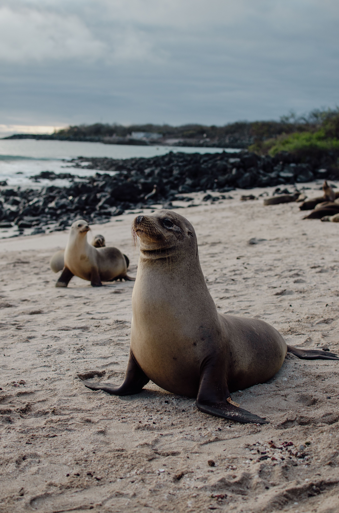

Tour Islas Galápagos Encantadas
$850 USD / persona — 5 Días / 4 NochesUna expedición completa navegando por las islas Santa Cruz e Isabela. Ideal para amantes de la naturaleza y fotografía de vida silvestre.
Itinerario Resumido:
- 📍 Día 1: Arribo a Baltra, traslado a Puerto Ayora y visita a la Estación Científica Charles Darwin.
- 📍 Día 2: Tour navegable a Tortuga Bay y esnórquel en Las Grietas.
- 📍 Día 3: Navegación a Isla Isabela, avistamiento de pingüinos y tintoreras.
- 📍 Día 4: Caminata al Volcán Sierra Negra y descanso en Playa Puerto Villamil.
- 📍 Día 5: Compras de recuerdos y traslado al aeropuerto de Baltra.
Detalles del Viaje:
- ✔ Incluye: Hospedaje, desayunos, guías naturalistas del PNG, transporte marítimo e instrumental de esnórquel.
- ✖ No incluye: Entrada al Parque Nacional ($20 nacional / $200 extranjero) y tarjeta TCT ($20).
- 🎒 Qué llevar: Traje de baño, zapato de agua, bloqueador biodegradable y cámara acuática.